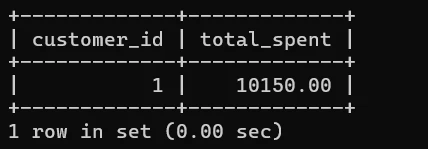
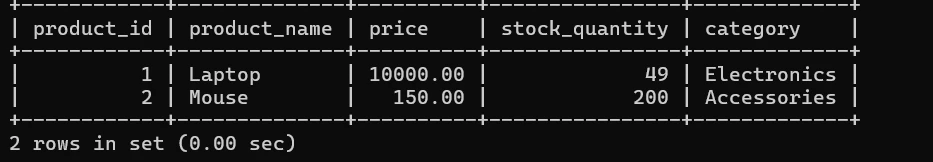
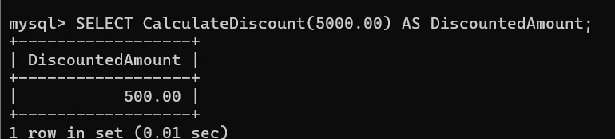

Problem and solution
Online stores need to keep customers, products, orders and stock records consistent. For my Database Systems 3 GA9 coursework, I created a sample MySQL database and explored advanced SQL features that could support e-commerce reporting and automated tasks.
This was a small academic prototype, not a deployed online store or a production payments platform.
Database design
The submitted transcript documents five tables: Customers, Products, Orders, OrderItems and OrderLog. It uses primary keys and foreign keys to associate purchases with customers and products.
| Table | What it stores |
|---|---|
| Customers | Sample customer details |
| Products | Product names, prices and stock levels |
| Orders | Order totals, dates, statuses and customer references |
| OrderItems | Products and quantities in each order |
| OrderLog | Audit entries produced by the insert trigger |
Advanced SQL features explored
- Common Table Expression (CTE): summarised total spending by customer.
- UpdateStock stored procedure: reduced an item's recorded stock from 50 to 49 in the captured test.
- CalculateDiscount function: returned a discount amount of 500.00 for an input of 5,000.00 (10%).
- AfterOrderInsert trigger: successfully created to log future orders; the visible log check was empty because the sample order had already been entered.
- ArchiveOldOrders event: created after fixing SQL delimiter errors; the documents do not show an actual scheduled archival run.
- Cursors: discussed in the report as an approach to low-stock scanning, but the submitted SQL transcript does not contain an executable cursor demonstration.
Original SQL execution evidence
Selected output excerpts below are cropped from the original 2025 report to avoid publicly exposing the student-number-based schema names. They are not regenerated results.



Portfolio SQL and interactive demonstration
To make the concepts accessible, I prepared a sanitised SQL replay and a browser-only interactive explanation of ordering, stock movement and order logs. The replay is a revised educational example of the same concepts; it is not the unchanged 2025 submission.
The browser demonstration uses local JavaScript sample data and does not connect to a MySQL server.
Debugging and reflection
Advanced database operations require precise syntax and thoughtful testing. The original command-line record includes unsuccessful event and delimiter attempts before the event creation was accepted. The report reflects on trade-offs: cursors do not scale well for large datasets, while triggers and scheduled events need careful monitoring.